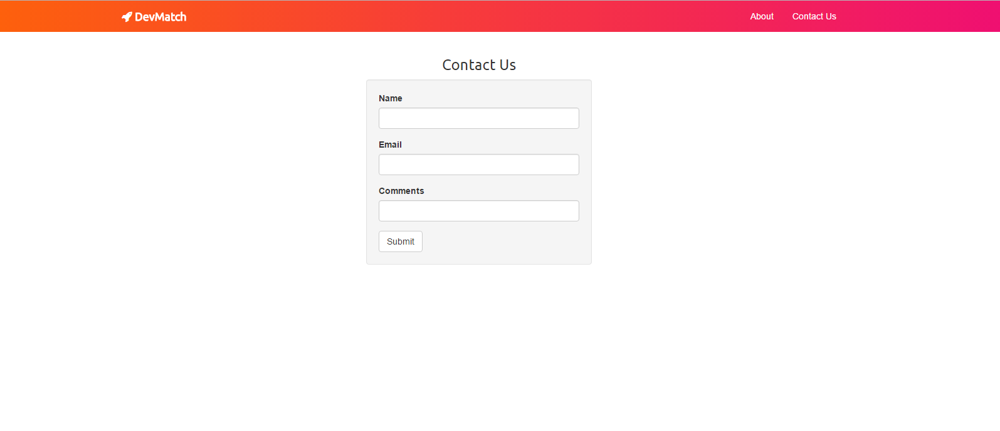
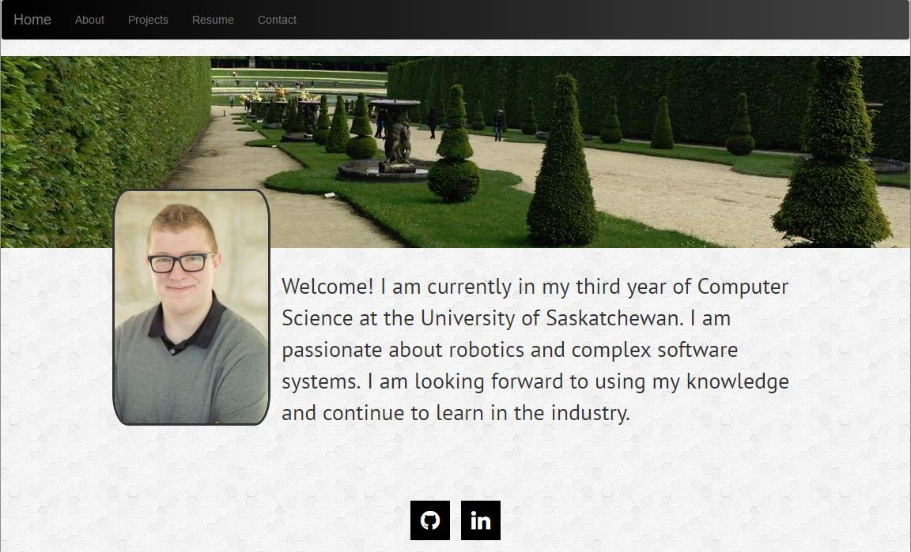

At the University of Saskatoon, I played a founding role in the creation of the Universities first Exoskeleton Team or ExUS. The goal of the team it to create a functional exoskeleton (using air muscles as shown above) that augment the natural ability of the wearer. I am currently the acting Treasurer and an active part of the software development team.
The above shows a personal project to learn web design and Ruby on Rails. Following the course presented by upskillcourses, I was able to create a mock website called DevMatch. Other than learning the basics of HTML, CSS, Ruby on Rails and other web design paradigms, I was able to set up a SQL contact database (Shown Above). All source code it on github.
The above is the webpage you are on now! The construction of this webpage was a massive learning experience. With the help of resources such as bootstrap, jQuiry, and CodePen I was able to construct my this website. All source code it on github.
"When something is important enough, you do it even if the odds are not in your favor."
-Elon Musk